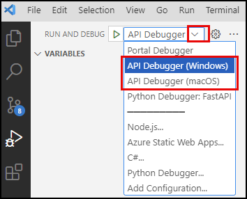
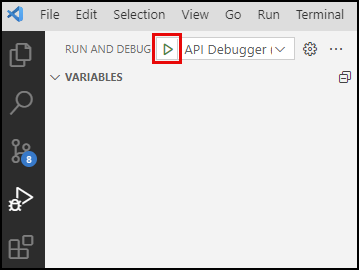
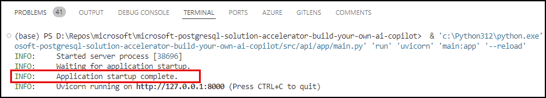
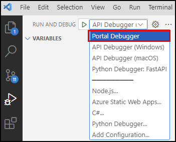

6.3 Update Copilot With Semantic Ranking¶
The next step is to update your API to use the semantic ranking capability. For this, you will update how it finds and retrieves SOW chunks, which are the blocks of content extracted from each SOW uploaded into the application.
Review the function¶
Following the function calling pattern used by your LangChain agent to retrieve data from the database, you will use a Python function to execute semantic ranking queries from your copilot. Within the src/api/app/functions/chat_functions.py file, the find_sow_chunks_with_semantic_ranking function has been provided for executing queries using the semantic_reranking UDF you added to your database in the previous step. Open it now in Visual Studio Code and explore the code with the function. You can also expand the section below to see the code inline.
Find SOW Chunks with Semantic Ranking code
| src/api/app/functions/chat_functions.py | |
|---|---|
1 2 3 4 5 6 7 8 9 10 11 12 13 14 15 16 17 18 19 20 21 22 23 24 25 26 27 | |
-
Generate embeddings (line 18): Azure OpenAI generates embeddings representing the user query.
-
Create vector search query (lines 21-24): The UDF expects vector search results as input, so a vector search query is created. The query selects the
contentfield from thesow_chunkstable and orders them by semantic similarity. -
Create a semantic ranker query (lines 27-35): The results of the vector search query are required to call the
semantic_rerankingUDF.- Create CTE (lines 28-30): A common table expression (CTE) executes the vector search query and extracts the content values and relevancy scores from that query.
- Execute the
semantic_rerankingUDF (lines 31-33): Using the results of the CTE, the results are reranked using thesemantic_rerankingUDF. - Limit results (line 34): The number of results is limited to ensure the more relevant records are sent to the LLM.
-
Return the results (lines 37-38): The query results are extracted and returned to the LLM.
Implement semantic ranker¶
To use the semantic ranking functionality instead of the vector search to retrieve SOW chunks, you must replace the function assigned to your LangChain agent's tools collection. You will replace the find_sow_chunks tool with the find_sow_chunks_with_semantic_ranking function.
-
In the VS Code Explorer, navigate to the
src/api/app/routersfolder and open thecompletions.pyfile. -
Within the
toolsarray, locate the following line:Python 1StructuredTool.from_function(coroutine=cf.find_sow_chunks), -
Replace that line with the following:
Insert the code to use the semantic ranking function!
Python 1StructuredTool.from_function(coroutine=cf.find_sow_chunks_with_semantic_ranking), -
Your new
toolsarray should look like this:Python 1 2 3 4 5 6 7 8 9 10 11 12 13 14 15 16 17 18 19 20 21 22 23
# Define tools for the agent to retrieve data from the database tools = [ # Hybrid search functions StructuredTool.from_function(coroutine=cf.find_invoice_line_items), StructuredTool.from_function(coroutine=cf.find_invoice_validation_results), StructuredTool.from_function(coroutine=cf.find_milestone_deliverables), StructuredTool.from_function(coroutine=cf.find_sow_chunks_with_semantic_ranking), StructuredTool.from_function(coroutine=cf.find_sow_validation_results), # Get invoice data functions StructuredTool.from_function(coroutine=cf.get_invoice_id), StructuredTool.from_function(coroutine=cf.get_invoice_line_items), StructuredTool.from_function(coroutine=cf.get_invoice_validation_results), StructuredTool.from_function(coroutine=cf.get_invoices), # Get SOW data functions StructuredTool.from_function(coroutine=cf.get_sow_chunks), StructuredTool.from_function(coroutine=cf.get_sow_id), StructuredTool.from_function(coroutine=cf.get_sow_milestones), StructuredTool.from_function(coroutine=cf.get_milestone_deliverables), StructuredTool.from_function(coroutine=cf.get_sow_validation_results), StructuredTool.from_function(coroutine=cf.get_sows), # Get vendor data functions StructuredTool.from_function(coroutine=cf.get_vendors) ] -
Save the
completions.pyfile.
Test with VS Code¶
As you have done previously, you will test your updates using Visual Studio Code.
Start the API¶
Follow the steps below to start a debug session for the API in VS Code.
-
In Visual Studio Code Run and Debug panel, select the API Debugger option for your OS from the debug configurations dropdown list.

-
Select the Start Debugging button (or press F5 on your keyboard).

-
Wait for the API application to start completely, indicated by an
Application startup complete.message in the terminal output.
Start the Portal¶
With the API running, you can start a second debug session in VS Code for the Portal project.
-
Return to the Run and Debug panel in Visual Studio Code and select the Portal Debugger option from the debug configurations dropdown list.

-
Select the Start Debugging button (or press F5 on your keyboard).
-
This should launch the Woodgrove Bank Contract Management Portal in a new browser window (http://localhost:3000/).
-
On the Dashboard page, enter the following message into the chat and send it:
Paste the following prompt into the copilot chat box!
1Show me SOWs pertaining to cost management and optimization. -
Observe the results provided using your UDF and semantic ranking.
Congratulations! You just learned how to leverage the semantic ranking capabilities in Azure Database for PostgreSQL!